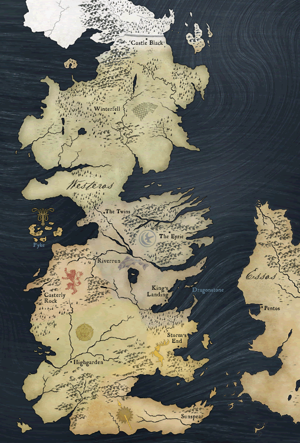

"And any man who must say ‘I am the king’ is no true king at all." The vast majority of events in the world of Ice and Fire take place in Westeros, which is logical seeing as it is the land that's being fought over. However, there are many characters (and one in particular) who spend a large amount of time is Essos, the land in the East. Essos was formerly ruled by Valyria, but one the Doom came to Valyria, it's hold on the land fell and became divided between many cities. The nearest to Westeros, and therefore the most impactful to the plot, are the nine free cities: Pentos, Braavos, Lys, Myr, Tyrosh, Norvos, Qohor, Volantis, and Lorath. Each city has it's own traits: for example, Myr, Lys, and Tyrosh are constantly at war, Braavos is the only one where slavery is illegal, and Volantis is a (failed) attempt at a second Valyria. Also significant is the Dothraki Sea: a great plain of grass full of nomadic horselords with gigantic hosts of tens of thousands of riders who raid the other cities of Essos. The Red Waste, a great desert in the south, and it's most populus city Quarth, are also of note. Slaver's bay is another place of great significance; it is where the vast majority of slaves are sold, trained, and sold again for any number of uses. The land of Essos is much more divers than Westeros, but Westeros is where the story is focused
Westeros is the focus of the entire story, and the battle for the Iron Throne of Westeros is the central focal point for most of the story. Westeros is a very diverse land geographically speaking, but quite a uniform one politically and socially, especially when compared to the diversity of Essos. It follows a pretty traditional feudal system, with a king and his high lords beneath him, each high lord with vassal lords and some of the more powerful vassal lords with minor lords of their own. Slavery is outlawed, and there are really only two religions, the faith of the seven and the Old Gods. Westeros is divided into seven "kingdoms"- they're called kingdoms, but they haven't been independent for 300 years. See the "Houses" page for more detail. In the North is the only part of Westeros that isn't part of the seven kingdoms: the land beyond the wall. The wall is a massive seven houndred foot tall structure cutting off the North from the Land Beyond the Wall, where there are no laws and others, direwolves, mammoths, and giants roam. The Night's Watch, a militant guard group sworn only to the kingdom and to no lord, has the duty of protecting westeros from threats to the North. King's Landing, one of the largest port towns in Westeros, is the capitol. There sits the Red Keep with the Iron Throne, where the Kings rule from.